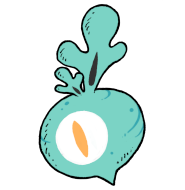
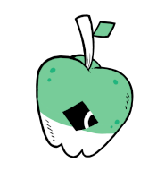
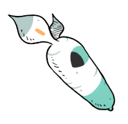
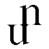
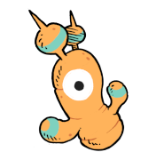
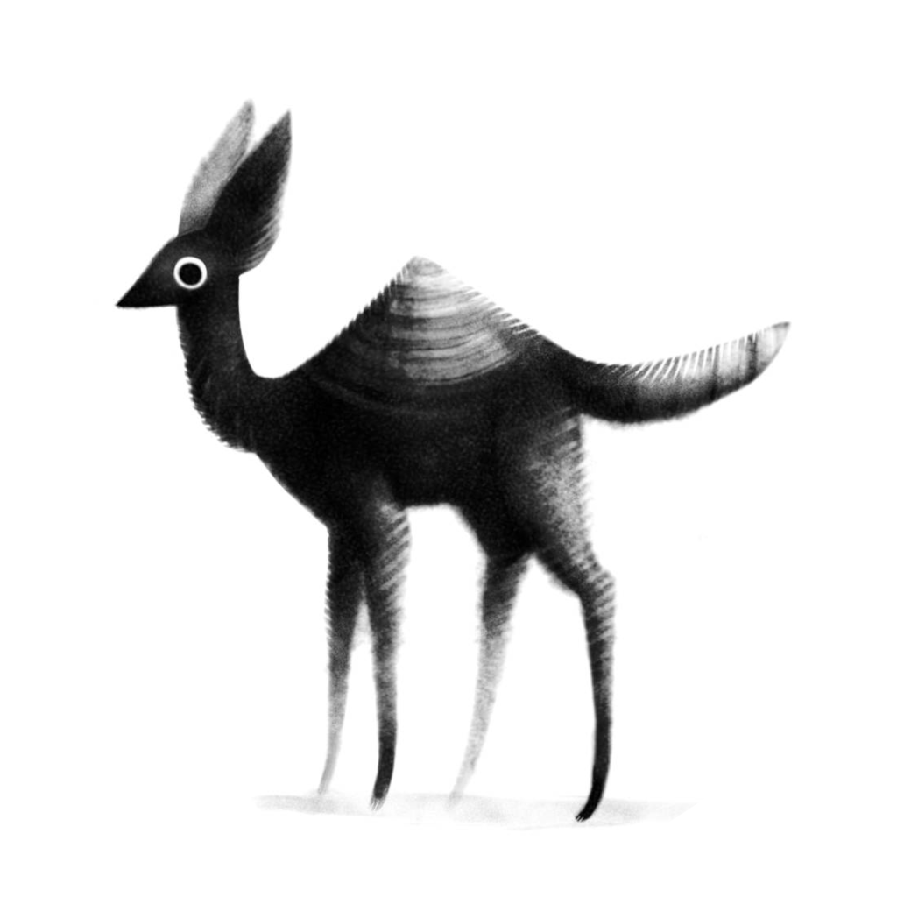
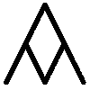

projects
Tools
|  | Orca is a two-dimensional esoteric programming language in which every letter of the alphabet is an operator, where lowercase letters operate on bang, uppercase letters operate each frame. [ Documentation | Download ] |
|  | Noodle is a 1-bit illustration program. It features a handful of patterns, a pixel-perfect clean up brush, animation capabilities, zoom functionalities and can export and import bit maps. [ Documentation | Download ] |
 |
Left is graphical plain-text editor. It features Uxntal syntax highlight, proportional text, a snarf buffer and chorded controls. [ Documentation | Download ] |
|  | Dotgrid is a grid-based vector drawing software designed to create logos, icons and type. It supports layers, the full SVG specs and additional effects such as mirroring and radial drawing. Dotgrid exports to both PNG and SVG files. [ Documentation | Download ] |
 |
Nasu is a spritesheet editor designed to create 8-bit fonts and sprites. [ Documentation | Download ] |
 |
Adelie is a plain-text presentation tool and format. It is used to create slideshows. It features a handful of commands to quickly place text and images on slides, it can be operated with a keyboard, mouse or a game controller. [Documentation] |
|  | The Uxn/Varvara ecosystem is a personal computing stack based on a small virtual machine that lies at the heart of our software, and that allows us to run the same application on a variety of systems. [Documentation] |
|  | Ronin is a procedural graphics tool designed to automate simple graphical tasks, like resizing, cropping, coloring, and generating algorithmic images. [ Documentation | Download ] |
Books
|  | Wiktopher is a 218-page fiction book following the story of Lupen and Eka as they sandfin across the Soronan Desert and learn about the varied lives of its inhabitants. The book features illustrations of creatures, plants, maps and languages of the different cultures of its world. Themes include cultural identity, food preservation, community, low-tech and more. [ Read more | Download ] |
 |
Busy Doing Nothing is a 218-page non-fiction book chronicling a 52-day sailing passage from Japan (Shimoda) to Canada (Victoria), it was the hardest thing we've ever done. We decided to keep a physical logbook of daily happenings onboard. Upon our arrival, we transcribed the handwritten pages, so we could publish them online. Weeks later, we decided to expand on it, to release it as a digital book. [ Read more | Download ] |
 |
Thousand Rooms is an illustrated e-book, following the behaviors of four characters in a room bound by a set of rules that is unknown to them.. [ Read more | Download ] |
Games
 |
Niju is a little application to review the Japanese hiragana and katakana alphabets. [ Read more | Download ] |
|  | Markl is a game that is in production. [ Read more] |
| Oquonie is a textless isometric puzzle game. You must make your way through a seemingly endless succession of rooms. You will not be alone, your incarnations will have the help of bizaroid characters that speak an obscure language. [ Read more | Download ] |
|
 |
Donsol is a dungeon crawler card game playable with a standard 54 card deck, now playable as digital rom. [ Read more | Download ] |
| Paradise plays like a strange interactive fiction novel, in an ever-changing world where you are not an avatar but a force acting upon places, and objects, and puns, words; moving around and into your other selves, threading chaos. [ Read more | Download ] |
|
| Hiversaires is a point-and-click adventure game. Venture down entangled corridors, enter the dark world. [ Read more | Download ] |
|
| Verreciel is a space exploration game with controls reminiscent of modular synthesiser. [ Read more | Download ] |
Videos
| From 2016 to 2020, we published videos on YouTube every month, the goal was to share our progress around the Pacific to our friends, and family and to provide some context for our projects. See the [full list] of videos |